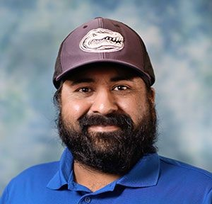

W1. E3 Fellows Launch: Program Overview, Canvas & Teaching Resources at UF
Session details
The inaugural meeting of the cohort — what the year ahead looks like, who is in it with you, and how to get a course stood up in Canvas before the semester starts.
- Welcome & E3 Fellows program overview — an introduction to the program, its goals, activities, and what you can expect throughout the year.
- Meet & socialize — an opportunity to meet the other E3 Fellows, learn about each other’s backgrounds and interests, and build our cohort community.
- Getting started with Canvas — setting up and organizing your Canvas course for the semester.
- Canvas guidelines, tips & tricks — practical tips for using Canvas effectively, including modules, assignments, announcements, communication, and course organization.
- Teaching resources at UF — an overview of resources available to support your teaching and professional development.
- Open Q&A — bring any questions you have about Canvas, course setup, teaching at UF, or other instructional resources.
-

Amanpreet Kapoor, Ph.D. Associate Chair for Academics & Instructional Associate Professor, Engineering Education